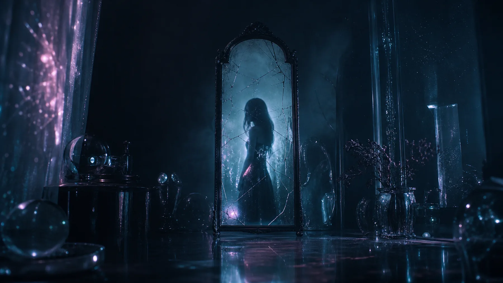
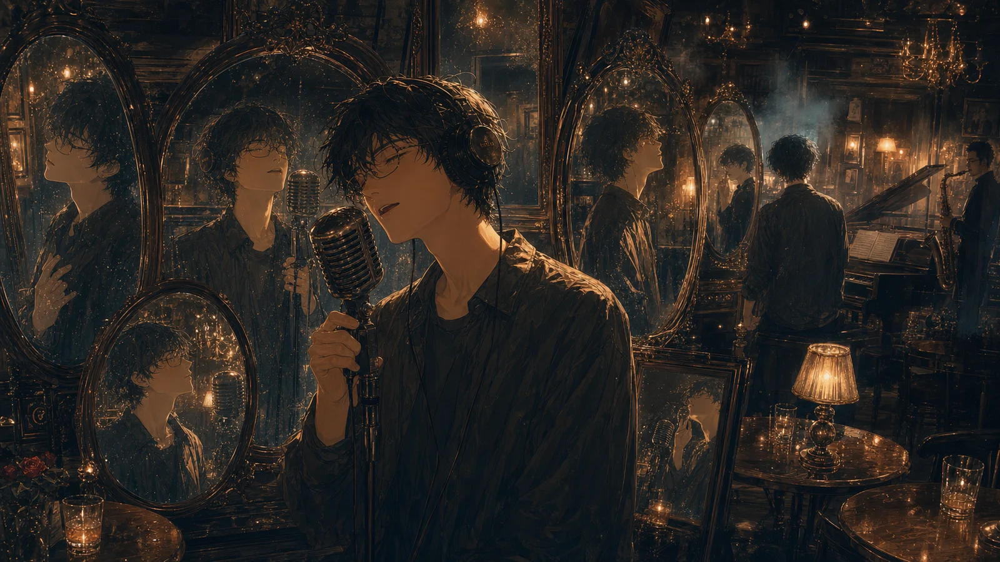
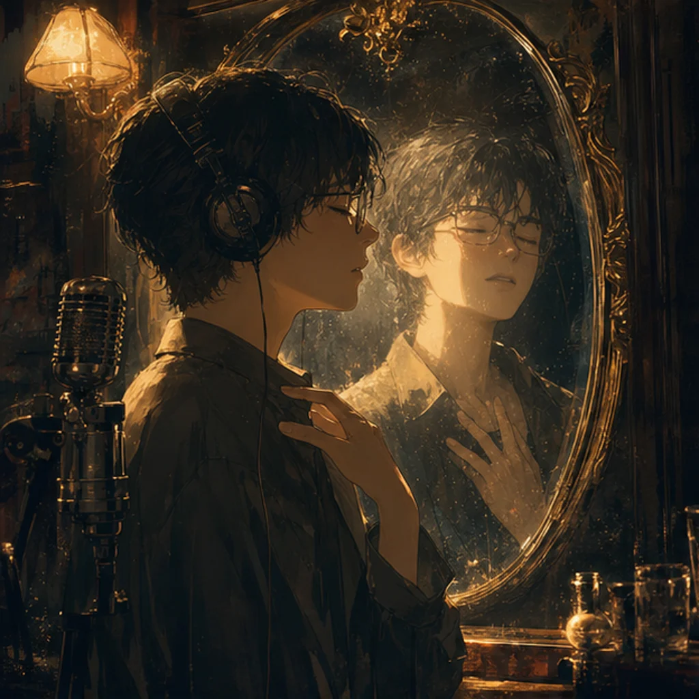
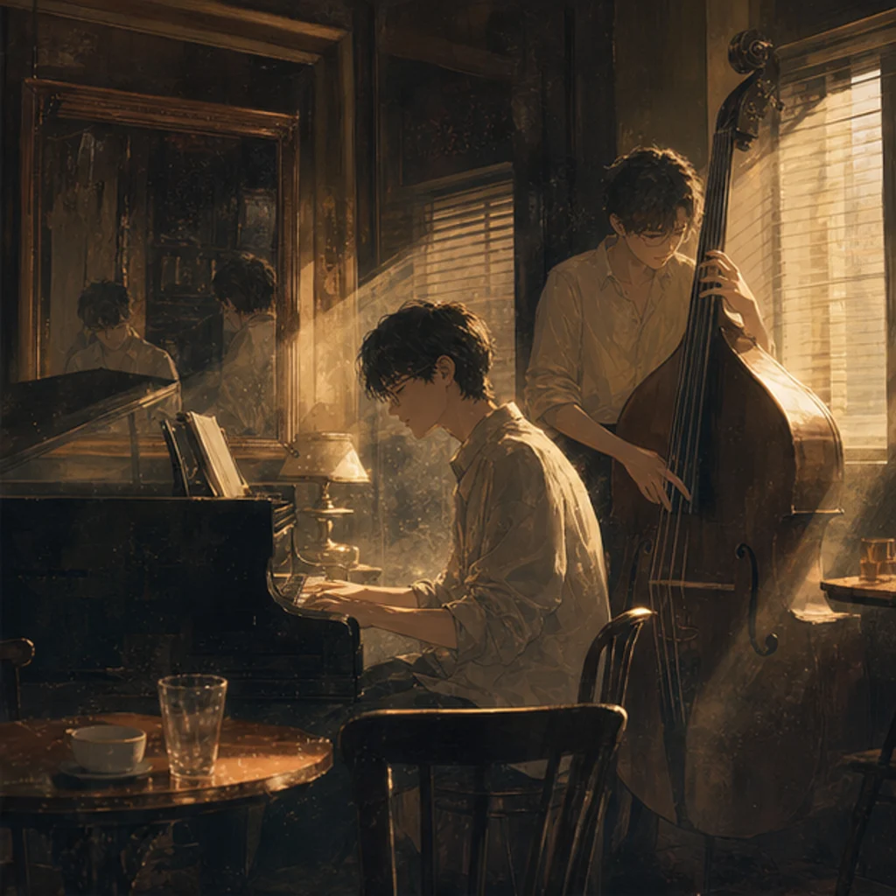
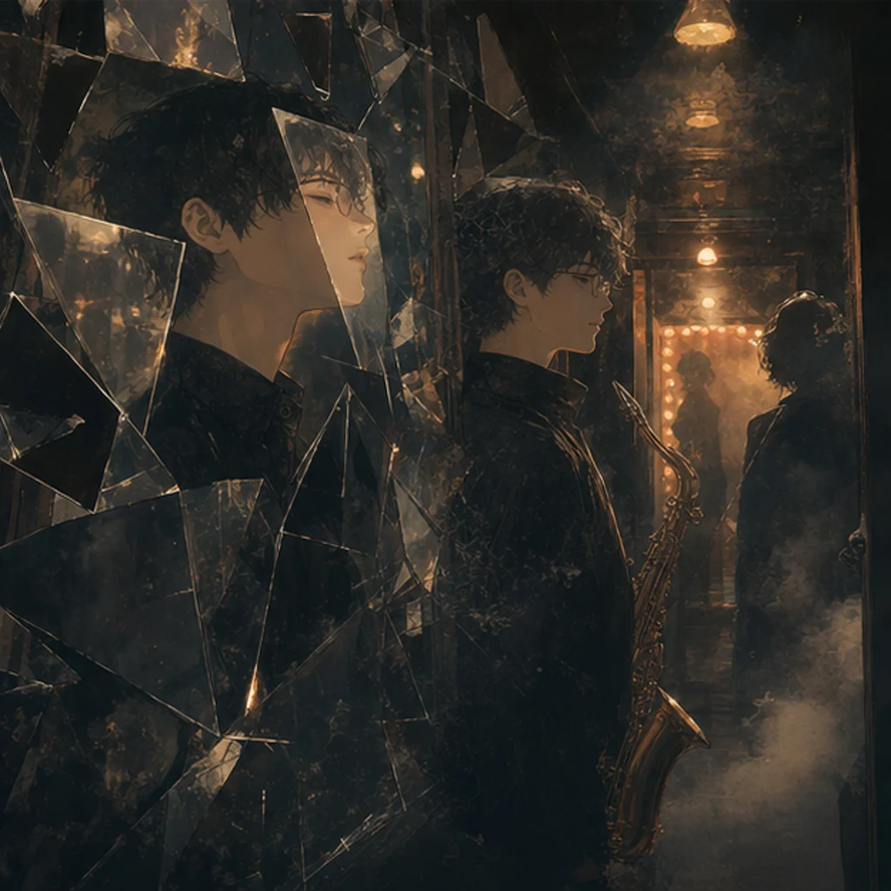
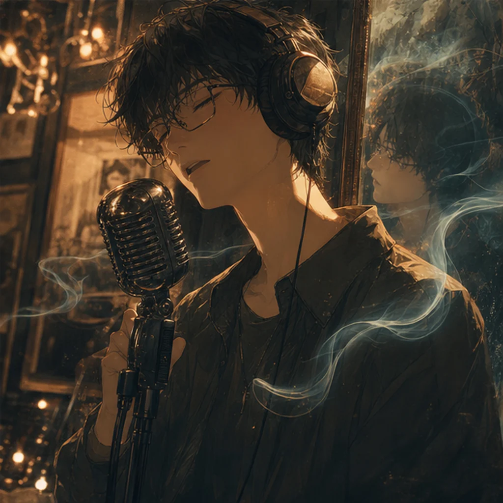

中文
A1
你是我的镜子
我的镜子
我在你眼里
看见我自己
不是想你
没有想你
是在想
你眼里的我
A2
你是我的镜子
只属于我的镜子
那一刻起
梦变成日常
不是刻意
不知不觉
你就在
回忆里散不去
B
我很少想起谁
没有谁值得被想起
可你会出现
在我没准备的瞬间
没有预告
没有理由
A3
你是我的镜子
只属于我的镜子
那一刻起
梦变成日常
不是刻意
不知不觉
你就在
我呼吸里
原创音乐作品 / Original music work
《镜子》是一首 Jazz ballad 中文原创，编曲以钢琴和人声为中心，bass 与鼓把呼吸推进成缓慢律动，sax 在尾奏留下回忆的余光。 不是在想你，是在想你眼里的我。每个人都是一面镜子，而这首歌写的是：透过一个人，突然看见真正属于自己的自己。 Mirror is a Chinese jazz ballad centered on vocal and piano, with bass and drums turning breath into a slow pulse and sax leaving the afterglow. Not missing you, but missing the version of myself reflected in your eyes. This song begins where memory becomes a mirror.

动画视觉 Motion world

梦不是被保存在远处，而是在日常里反复自动播放。
The recording room keeps the moment from turning abstract.
The piano turns involuntary memory into pulse and touch.
The outro stays as afterimage instead of explanation.
歌词结构 / Lyric structure
A1 看见自己，A2 梦变日常，B 突然闪现，A3 进入呼吸。

人物被放进镜面和倒影里，重点不是“对方”，而是被照亮后的自我。

钢琴和 bass 被放进现场记忆里，像梦慢慢落到可以反复排练的日常。

想念像是从暗处自己跳出来一样。

人声和 sax 像两层呼吸叠在一起，回忆不再是事件，而是身体里的持续动作。
歌词 / Lyrics
A1
你是我的镜子
我的镜子
我在你眼里
看见我自己
不是想你
没有想你
是在想
你眼里的我
A2
你是我的镜子
只属于我的镜子
那一刻起
梦变成日常
不是刻意
不知不觉
你就在
回忆里散不去
B
我很少想起谁
没有谁值得被想起
可你会出现
在我没准备的瞬间
没有预告
没有理由
A3
你是我的镜子
只属于我的镜子
那一刻起
梦变成日常
不是刻意
不知不觉
你就在
我呼吸里
A1
You are my mirror
My mirror
In your eyes
I see myself
I am not missing you
No, not missing you
I am thinking of
The me inside your eyes
A2
You are my mirror
The mirror that belongs only to me
From that moment on
Dream became daily life
Not on purpose
Without noticing
You stayed there
Unable to fade from memory
B
I rarely think of anyone
No one is worth being remembered
But you appear
When I am least prepared
No warning
No reason
A3
You are my mirror
The mirror that belongs only to me
From that moment on
Dream became daily life
Not on purpose
Without noticing
You stayed there
Inside my breath
创作故事 / Song story
这首歌的起点不是一个宏大的概念，而是一次很私人、很准确的描述：我很少回忆，也很少思念一个人，但最近在半醒、疲惫、发呆的时候，关于意中人的画面会自动播放。 The song did not begin from a big concept. It began from a precise private sentence: I rarely remember or miss someone, yet recently your images autoplay when I am half-awake, tired, or drifting.
“每个人都是一面镜子”这句话，最后变成整首歌的核心。镜子不是用来证明对方有多完美，而是因为在这面镜子里，我能看见真实的我、属于自己的我、接近天性的我。 The line “everyone is a mirror” became the center of the song. The mirror is not proof of someone else’s perfection. It is the place where I can see the truer, freer version of myself.
视频素材 / Animated footage
地点 / Location: Berklee Studio A
日期 / Date: 5.5
人声和钢琴先把亲密记忆拉回身体。
Voice and piano bring private memory back into the body.
重复动机像呼吸一样，把“不知不觉”做成推进。
Repeated motion turns “without noticing” into forward pulse.
尾奏像镜面上的余光，不回答，只继续闪。
The outro behaves like light left on the mirror surface.
制作人的 cast keyframe，和录音棚里的现场语境放在一起。
A producer cast fragment placed inside the recording context.
贝斯不是背景信息，它给这首歌的身体重心。
Bass gives the song its physical center.
录音工程把私人动机留成可以反复播放的声音。
Engineering turns a private impulse into replayable sound.
乐手展示 / Musician showcase
主唱、制作人、钢琴、贝斯、萨克斯、鼓与录音师。每个人都是这首 Jazz ballad 现场声音的一部分。
Vocal, producer, piano, bass, sax, drum, and engineer: the people behind the live sound of Mirror.
歌曲的叙述者，也是“镜子”这条线的声音主体。
把写作动机落到可交付制作形态里。
钢琴承担呼吸、和声和记忆自动播放的底层动作。
低频让“梦变成日常”有了可以站住的重量。
尾奏里的余光，给回忆一个不急着结束的出口。
鼓让“不知不觉”的推进从情绪变成时间。
把现场表演、房间和声音边界收进同一个版本。
制作名单 / Credits